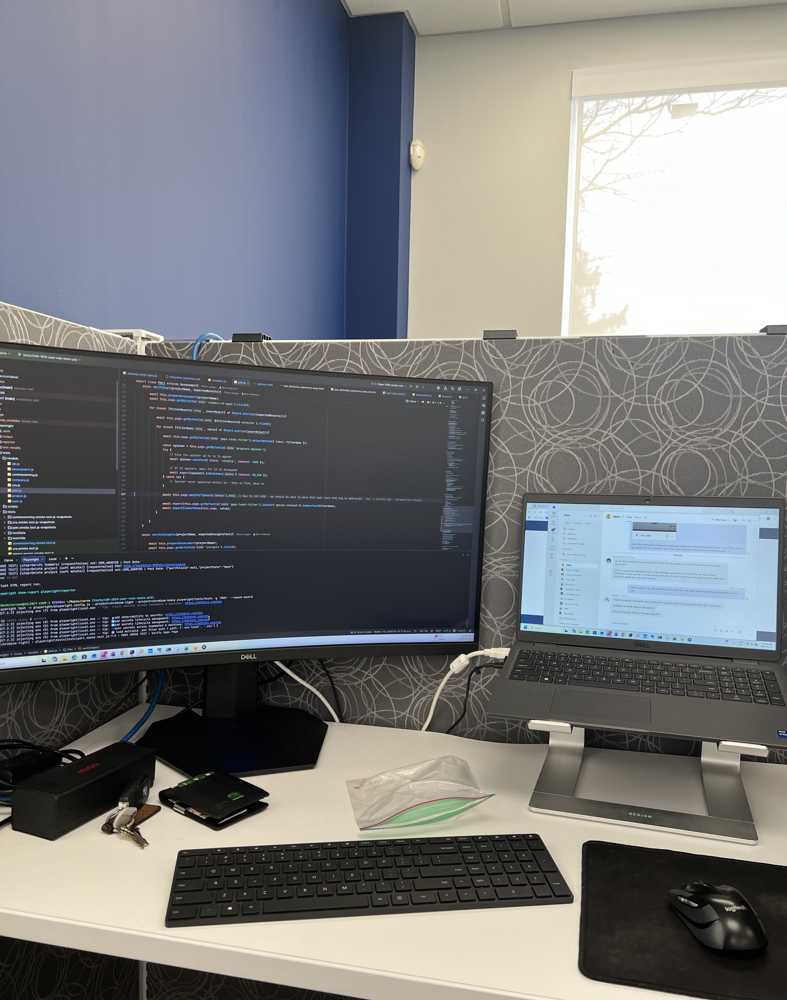

S27 @ Valency
In the Summer of 2027, I had the opportunity to return to the development team at Valency Inc. In this report, I will give an overview of the work I accomplished and reflect on the key takeaways from this experience.
In the Summer of 2027, I had the opportunity to return to the development team at Valency Inc. In this report, I will give an overview of the work I accomplished and reflect on the key takeaways from this experience.
Valency is a business-to-business software company specializing in project assurance for capital projects. The goal of project
assurance is to provide a company with confidence and predictability as to whether a project will remain viable. Valency's key
area of focus is on capital projects, which are any sort of large-scale, expensive investments that are made by a company.
Some examples of capital projects would be an oil company investing in new drilling locations, or a tech company investing in
building a new data center.
Valency sells a product called Carve which provides standardized assessments, built for different industries, to assess the
current status of a project. Carve contains a variety of assessment templates which cover all different phases of a project's
lifecycle. Along with these assessments, the Carve platform provides companies with benchmarking against both historical and industry
data. This benchmarking provides customers with an idea of where they stand against other companies in their industry.
Valency is based in Waterloo, Ontario and has existed for over 13 years. Over that lifespan the team at Valency has assessed over
$68 billion in project value and their customers have used the Carve platform to assess an additional $65 billion
of annual capital expenditures.
Reference:
[1] Valency Inc., "About Valency," 2027. [Online]. Available: https://valencyinc.com/about . [Accessed: August 25th, 2027].
At Valency, I worked as a part of the development team and had two major tasks for the work term:
My first task was updating our training site to allow public registrations to a specific preview course. To accomplish this I integrated our existing training site with a HubSpot form, allowing users to sign up for the course using the form and receive immediate access to the course.
While working on this, my main takeaways were:
The initial approach to this integration would have required purchasing HubSpot's webhook functionality, which would have added roughly $700 per month to the project. Instead of accepting this cost, I researched how HubSpot's existing features could be used to achieve the same result and developed a workaround that allowed us to connect the registration process without requiring the paid webhook functionality. This experience taught me to look beyond the most obvious implementation and consider alternative solutions when working within technical or financial constraints.
The initial sign up process for our training site included multiple emails and 2 different sites to log into. This resulted in lots of customer confusion and support calls. Simplifying this workflow into 1 simple login email was key for us to feel confident putting this in front of customers and prospective customers.
The second project that I worked on was an evidence retrieval service. The goal of the service was to associate evidence from construction documents to questions from Valency's core assessments. To build this prototype we had 2 main approaches. The first approach was to use a RAG framework. I was involved in building the chunking service for our document ingestion process and also built a debug UI to view how we parsed documents into chunks. Additionally, I built out an evaluation framework which calculated metrics such as recall, precision, and hit rate for the chunks retrieved from our RAG system. Part of that evaluation framework also included a UI build out for SME labeling to be conducted on our sets of test documents. We also experimented with taking advantage of the long context windows of frontier LLM models. We ran similar comparisons against our RAG framework and compared recall metrics.

My Desk at Valency's office
This term I was able to be involved in our team bringing up a new service into the cloud. We deployed it using a platform called Northflank, which builds the project from a Dockerfile and is comparable to other deployment platforms. I believe that the experience and troubleshooting that I was able to do in this term has prepared me for future DevOps experience in the future.
Another goal that I set out to achieve this term was to make sure that I was communicating clearly with my team. I had the opportunity to work in Valency's Waterloo office with the development team and frequently was able to collaborate in person. I participated actively in our weekly sprint planning meetings and in impromptu conversations about implementation approaches in our codebase throughout the day. I feel that this experience has prepared me to be a strong collaborator on future teams.
My last goal that I had for this term was Personal Organization. Each day I started with our standup meeting where I identified the tasks that I was looking to complete for the day. I would write down those tasks and use that to guide my day. If I finished that work early I would pull tickets from our Jira backlog proactively and look for ways that I could drive our projects forward.
To conclude, this experience at Valency has been an excellent stepping stone for me as I look to build up my career as a Software Engineer. I really enjoyed working with the entire team at Valency and feel proud of the work that we were able to accomplish this term. This term has validated to me how rewarding the problem-solving and creative side of software engineering can be. My work days have flown by, and I end each day excited about what we are building.
I would like to thank Brad for his leadership throughout this term. Our weekly 1:1 meetings proved to be helpful in guiding me throughout this term. I really appreciated the way that I was treated as a full-time team member and was trusted with important responsibilities during this term.
I would also like to acknowledge Eli for his help throughout the semester. It was very helpful to have a peer that was accessible for questions and willing to help talk through implementations.
Finally, I would like to thank the whole team at Valency. This is a focused, high-performing team of people who take ownership of their work and take pride in our product. I am thankful that I was able to be shaped by this team's work ethic and commitment.